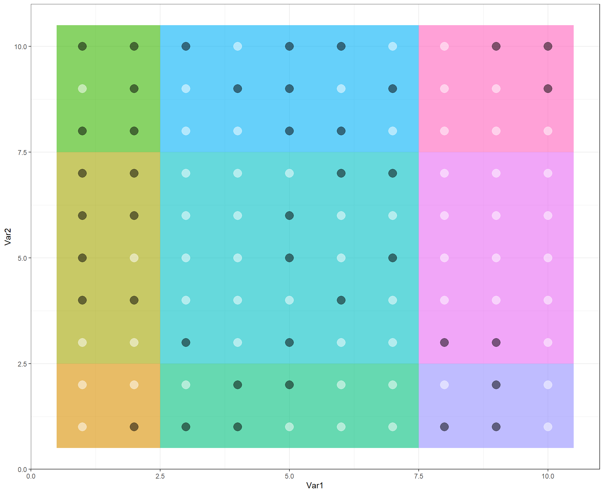

Networks_HW6
KiseokUchicago
2021-05-19
Last updated: 2021-05-21
Checks: 7 0
Knit directory: Networks_HW_S2021/
This reproducible R Markdown analysis was created with workflowr (version 1.6.2). The Checks tab describes the reproducibility checks that were applied when the results were created. The Past versions tab lists the development history.
Great! Since the R Markdown file has been committed to the Git repository, you know the exact version of the code that produced these results.
Great job! The global environment was empty. Objects defined in the global environment can affect the analysis in your R Markdown file in unknown ways. For reproduciblity it’s best to always run the code in an empty environment.
The command set.seed(20210409) was run prior to running the code in the R Markdown file. Setting a seed ensures that any results that rely on randomness, e.g. subsampling or permutations, are reproducible.
Great job! Recording the operating system, R version, and package versions is critical for reproducibility.
Nice! There were no cached chunks for this analysis, so you can be confident that you successfully produced the results during this run.
Great job! Using relative paths to the files within your workflowr project makes it easier to run your code on other machines.
Great! You are using Git for version control. Tracking code development and connecting the code version to the results is critical for reproducibility.
The results in this page were generated with repository version 2f8ec7b. See the Past versions tab to see a history of the changes made to the R Markdown and HTML files.
Note that you need to be careful to ensure that all relevant files for the analysis have been committed to Git prior to generating the results (you can use wflow_publish or wflow_git_commit). workflowr only checks the R Markdown file, but you know if there are other scripts or data files that it depends on. Below is the status of the Git repository when the results were generated:
Ignored files:
Ignored: .Rhistory
Ignored: .Rproj.user/
Untracked files:
Untracked: analysis/infomap
Untracked: data/1_0.3_edge_mer.css.ss.5.tsv
Untracked: data/1_0.3_node_mer.css.ss.5.tsv
Untracked: data/2_0.3_edge_dom.css.ss.5.tsv
Untracked: data/2_0.3_node_dom.css.ss.5.tsv
Untracked: data/3_0.3_edge_wil.css.ss.5.tsv
Untracked: data/3_0.3_node_wil.css.ss.5.tsv
Untracked: data/4_0.3_edge_phy.css.ss.5.tsv
Untracked: data/5_0.3_edge_dom.phy.ss.5.tsv
Untracked: data/6_0.3_edge_wil.phy.ss.5.tsv
Untracked: data/7_0.3_edge_fun.css.ss.5.tsv
Untracked: data/8_0.3_edge_dom.fun.ss.5.tsv
Untracked: data/9_0.3_edge_wil.fun.ss.5.tsv
Untracked: data/Chesapeake_bay_links.csv
Untracked: data/Chesapeake_bay_nodes.csv
Untracked: data/Dunne2013PBioSupData.xlsx
Untracked: data/M_PA_003.csv
Untracked: data/NEE2017_nodes.csv
Untracked: data/Otago_Data_Links.csv
Untracked: data/Otago_Data_Nodes.csv
Untracked: data/Pilosof_2017NEE_interlayer_hosts.csv
Untracked: data/Pilosof_2017NEE_interlayer_parasites.csv
Untracked: data/Pilosof_etal_NEE2017_1.csv
Untracked: data/Pilosof_etal_NEE2017_2.csv
Untracked: data/Pilosof_etal_NEE2017_3.csv
Untracked: data/Pilosof_etal_NEE2017_4.csv
Untracked: data/Pilosof_etal_NEE2017_5.csv
Untracked: data/Pilosof_etal_NEE2017_6.csv
Untracked: data/Tur2016.csv
Untracked: data/Ural_valley_A_HP_048.csv
Untracked: data/chilean_NTIneg.txt
Untracked: data/chilean_NTIpos.txt
Untracked: data/chilean_TI.txt
Untracked: data/chilean_metadata.xls
Untracked: data/kongsfjorden_links.RData
Untracked: data/kongsfjorden_nodes.RData
Untracked: data/siberia1982_7_links.RData
Untracked: data/siberia1982_7_nodes.RData
Untracked: data/vizentin-bugoni_et_al_2016_complementary.xlsx
Untracked: infomap-script.py
Untracked: infomap.exe
Unstaged changes:
Deleted: analysis/Infomap_HW.Rmd
Modified: analysis/Networks_HW3.Rmd
Note that any generated files, e.g. HTML, png, CSS, etc., are not included in this status report because it is ok for generated content to have uncommitted changes.
These are the previous versions of the repository in which changes were made to the R Markdown (analysis/Networks_HW6.Rmd) and HTML (docs/Networks_HW6.html) files. If you’ve configured a remote Git repository (see ?wflow_git_remote), click on the hyperlinks in the table below to view the files as they were in that past version.
| File | Version | Author | Date | Message |
|---|---|---|---|---|
| Rmd | 2f8ec7b | KiseokUchicago | 2021-05-21 | HW6 |
| html | 851cb17 | KiseokUchicago | 2021-05-20 | Build site. |
| Rmd | 45488b6 | KiseokUchicago | 2021-05-20 | HW6 |
| html | 0b1c506 | KiseokUchicago | 2021-05-20 | Build site. |
| Rmd | e19e22c | KiseokUchicago | 2021-05-20 | start |
Homework6 (Models of networks)
Coding assignment for ECEV 44500 Networks in Ecology and Evolution
Professor: Mercedes Pascual, Sergio A. Alcala Corona
Student: Kiseok Lee
# libraries
library(igraph)
library(bipartite)
library(dplyr)
library(ggplot2)
library(RColorBrewer)
library(vegan)
library(tidyverse)
library(magrittr)
library(readxl)
library(reshape2)
library(gtools)
library(devtools)# install_github('quicklizard99/Basingstoke')
library(Basingstoke)# define function
# We will need this function later. It is based on the code from lab 1.
plot_web_trophic <- function(g){
basal <- which(igraph::degree(g, mode = 'in') == 0) # Basal species do not have ingoing links
top <- which(igraph::degree(g, mode = 'out') == 0) # Top species do not have outgoing links
interm <- V(g)[which(!V(g) %in% c(basal,top))] # Intermediate are all the rest
V(g)$troph_pos <- rep(0,length(V(g)))
V(g)$troph_pos[which(V(g)$name %in% basal)] <- 1
V(g)$troph_pos[which(V(g)$name %in% top)] <- 3
V(g)$troph_pos[which(V(g)$name %in% interm)] <- 2
# create a matrix forthe layout coordinates.
coords <- matrix(nrow=length(V(g)), ncol=2) #
# The x positions are randomly selected
coords[,1] <- runif(length(V(g)))
# The y positions are the trophoc positions
coords[,2] <- V(g)$troph_pos
par(mar=c(0,0,0,0))
plot(g,layout=coords,
vertex.color=V(g)$troph_pos,
vertex.label=NA,
vertex.size=8,
edge.color='black',
edge.arrow.size=.3,
edge.width=.5)
}1. Network generation
Generating synthetic networks is the process of filling an adjaceny matrix according to a given set of rules. We will examine 3 models applied to food webs that create unweighted food webs.
A technical note: if you are into studying food webs, then exploring the packages cheddar and Basingstoke may prove very useful!
1.1 Random model
The most straightforward way to generate a network is the random model in which interactions are filled randomly to obtain a network with a given connectance. “Any link among S species occurs with the same probability (P) equal to C” [1]. First let’s do that with Basingstoke just to see how this package works.
# Create 1 web with S species and a density of C
S <- 20 # Number of species
C <- 0.1 # Connectance (density)
web <- RandomLinks(1,S,C)
# Results is a list of "edge list" objects.
web <- web[[1]]
# Plot the web
g <- igraph::graph.data.frame(web)
graph.density(g)[1] 0.1052632plot(g)Creating adjacency matrix
# Now transform the edge-list to an adjacency matrix.
A <- igraph::get.adjacency(g, sparse = F)
A[mixedsort(rownames(A)),mixedsort(colnames(A))][1:5,1:5] # mixedsort comes from library gtools. It sorts strings with embedded numbers so that the numbers are in the correct order 1 2 3 4 5
1 1 0 0 1 0
2 0 0 0 0 0
3 0 0 0 0 0
4 0 0 0 0 1
5 0 0 0 0 1Now let’s try to program that one ourselves. We can use a command that randomly generates 0’s or 1’s with a given probability (following the definition “…the same probability (P) equal to C…” )
web <- matrix(data = rbinom(S*S,1,C),nrow = S, ncol = S) # rbinom here generates either 0 or 1 with a probability of success for 1 equals C.
g <- igraph::graph.adjacency(web)
graph.density(g)[1] 0.1052632# We can take advantage of the basingstoke package to generate multiple webs and for plotting nicely.
webs <- CommunityFactory(S=S, n=1, generator=RandomLinks, C=C) # use this function to generate an object of class "community"
class(webs) # This is a list[1] "CommunityCollection" "list" # The community class has these features
names(webs$`Artificial community 1`)[1] "nodes" "properties" "trophic.links"# Now plot the matrix
PlotPredationMatrix(webs[[1]])Problem 1. What essential features of food webs does the random algorithm miss?
Because it is binary, it is missing the interaction coefficients(strengths) between predator and prey.
1.2 Cascade model
In the cascade model, each species is assigned “a random value drawn uniformly from the interval [0,1] and each species has probability P=2CS/(S−1)=2LS/(S−1) of consuming only species with values less than its own.” [1] Let’s try that algorithm while learning a bit more on the packages.
web <- CascadeModelLinks(1,S,C)
# Results is a list of "edge list" objects.
web <- web[[1]]
# Plot the web
g <- igraph::graph.data.frame(web)
graph.density(g)[1] 0.1078947plot(g)# Now transform the edge-list to an adjacency matrix.
A <- igraph::get.adjacency(g, sparse = F)
#A[mixedsort(rownames(A)),mixedsort(colnames(A))] # mixedsort comes from library gtoolsProblem 2. Try to implement the cascade model by yourself.
each species is assigned a random value drawn uniformly from the interval [0,1] and each species has probability P=2CS/(S−1)=2LS/(S−1) of consuming only species with values less than its own.
# create random value for each species
species_uni <- runif(S)
P = (2*C*S) / (S-1)
# Matrix
A_cas <- matrix(rep(0,S*S),nrow = S, ncol = S)
# loop through row i and col j
for (i in 1:length(species_uni)){
for (j in 1:length(species_uni)){
if (species_uni[i] > species_uni[j]){
A_cas[i,j] <- rbinom(1,1,P)
}
}
}
diag(A_cas) # no intra consumption [1] 0 0 0 0 0 0 0 0 0 0 0 0 0 0 0 0 0 0 0 0A_cas [,1] [,2] [,3] [,4] [,5] [,6] [,7] [,8] [,9] [,10] [,11] [,12] [,13]
[1,] 0 0 1 0 1 0 1 0 0 0 0 0 0
[2,] 0 0 0 0 1 0 0 0 0 0 0 0 0
[3,] 0 0 0 0 0 0 0 0 0 0 0 0 0
[4,] 0 0 0 0 0 1 0 0 0 0 0 0 0
[5,] 0 0 0 0 0 0 0 0 0 0 0 0 0
[6,] 0 0 0 0 0 0 0 0 0 0 0 0 0
[7,] 0 0 0 0 0 0 0 0 0 0 0 0 0
[8,] 0 0 0 0 0 1 0 0 0 0 0 0 0
[9,] 0 0 0 0 1 1 0 0 0 0 0 0 0
[10,] 0 0 1 0 1 0 0 0 0 0 0 0 0
[11,] 0 0 0 0 0 0 0 0 0 0 0 0 0
[12,] 0 0 1 0 0 0 0 0 0 0 0 0 0
[13,] 0 1 0 0 0 0 0 0 1 1 0 0 0
[14,] 0 0 0 0 0 0 0 0 0 0 0 0 0
[15,] 0 0 0 0 0 0 0 0 0 0 0 0 0
[16,] 0 0 0 0 0 0 0 0 0 0 0 0 0
[17,] 0 0 0 0 0 0 0 0 0 0 0 0 0
[18,] 0 0 1 0 1 0 0 0 0 0 0 0 0
[19,] 0 0 0 0 0 0 0 0 0 0 0 0 0
[20,] 0 0 0 1 0 0 0 0 0 1 0 0 0
[,14] [,15] [,16] [,17] [,18] [,19] [,20]
[1,] 0 1 0 1 1 0 0
[2,] 0 0 0 0 0 0 0
[3,] 0 0 0 1 0 0 0
[4,] 1 0 0 1 0 1 0
[5,] 0 0 0 0 0 0 0
[6,] 0 0 0 0 0 0 0
[7,] 0 0 1 0 0 0 0
[8,] 0 1 1 0 0 0 0
[9,] 0 0 0 1 0 1 0
[10,] 1 1 1 0 0 0 0
[11,] 0 1 1 0 0 1 0
[12,] 0 0 0 0 0 0 0
[13,] 0 0 1 0 0 0 0
[14,] 0 0 0 0 0 1 0
[15,] 0 0 0 0 0 0 0
[16,] 0 0 0 0 0 1 0
[17,] 0 0 0 0 0 0 0
[18,] 0 0 1 0 0 0 0
[19,] 0 0 0 0 0 0 0
[20,] 1 0 0 0 1 0 0g_cas <- igraph::graph.adjacency(A_cas, mode = 'directed')
graph.density(g_cas)[1] 0.1105263plot(g_cas)Let’s now use the basingstoke package for plotting also.
webs <- CommunityFactory(S=S, n=1, generator=CascadeModelLinks, C=C) # use this function to generate an object of class "community"
class(webs) # This is a list[1] "CommunityCollection" "list" # The community class has these features
names(webs$`Artificial community 1`)[1] "nodes" "properties" "trophic.links"# Now plot the matrix
PlotPredationMatrix(webs[[1]])In fact the CommunityFactory function is very very convenient. It can generate multiple communities, with additional constraints. For example:
# Generate 4 communities with 3 basal species. This condition goes into the "accept" argument of the function.
webs <- CommunityFactory(S=S, n=4, C=C, generator=CascadeModelLinks,
accept=function(z) sum(IsBasalNode(z))==3)
# All have 3 basal species
sapply(webs, function(z) length(BasalNodes(z)))Artificial community 1 Artificial community 2 Artificial community 3
3 3 3
Artificial community 4
3 par(mfrow=c(2,2))
for (i in 1:4){PlotPredationMatrix(webs[[i]])}dev.off()null device
1 Sometimes it is more convenient to work with igraph. Here is a general way to move from a community object in basingstoke to igraph. From igraph it is easy to obtain an adjacency matrix as we have seen in our previous labs when moving between data structures.
# webs is the Basingstoke object
g <- graph.data.frame(webs[[1]]$trophic.links, vertices = webs[[1]]$nodes)
plot(g)1.3 Niche model
In the Niche Model, proposed in [1], species are ordered according to a randomly drawn ‘niche value’, ni. A consumer eats all species falling into a range whose center ci<ni is chosen at random from a beta distribution. Thus, diet is restricted to being contiguous, reflecting the assumption that diets can be arranged along one niche dimension. Notice how there are no gaps in diet in the prey species of each consumer. We can use the same syntax we have seen previously for CascadeModelLinks and CommunityFactory.
web <- NicheModelLinks(1,S,C)[[1]]
PlotPredationMatrix(webs[[1]])# Can also plot with igraph
web <- as.data.frame(web)
web <- with(web, web[order(resource,consumer),])
nodes <- data.frame(name=1:S)
g <- graph.data.frame(web, vertices = nodes)
plot_web_trophic(g)If you wanted to write your own code for the niche model here are somee Guidelines: Follow the caption in Fig. 1 of Williams and Martinez (2000), and take the beta value for the beta distribution to be (S-1)/2SC-1 (as in equation 10 in the Supp Info of Allesina et al. (Science, 2008)). You can also get some inspiration from the function NicheModelLinks for the last step determining the consumers.
1.4 The group model
In the group model, species are assigned to groups, each with its own per-group probability of a link. In addition, there are probabilities to connect between groups. The following code is adapted from Stefano Allesina.
generate_group_model <- function(groups, P, S){
## Pij is the probability of connecting a member of group i with a member of group j
## S is the total number of species
## groups is a vector of group memberships
# This draws S^2 edges (0 or 1) at random, with a probability from the probability matrix P[groups, groups].
# See comment below on P[groups, groups]
M <- matrix(rbinom(S^2, size = 1, prob = P[groups, groups]), S, S)
## sort elements in M by groups
M <- M[order(groups), order(groups)]
return(M)
}
S <- 10
groups <- rbinom(S, size = 2, 0.5)
groups <- groups + 1
m <- max(groups)
P <- matrix(runif((m)^2), m, m)
# In the function generate_group_model, the code P[groups,groups] asssigns
# probabilities from matrix P to pairs of species that belong to groups i,j. You
# can see the pairings with the following line.
outer(groups,groups,FUN = 'paste') [,1] [,2] [,3] [,4] [,5] [,6] [,7] [,8] [,9] [,10]
[1,] "3 3" "3 2" "3 1" "3 2" "3 2" "3 1" "3 1" "3 2" "3 2" "3 1"
[2,] "2 3" "2 2" "2 1" "2 2" "2 2" "2 1" "2 1" "2 2" "2 2" "2 1"
[3,] "1 3" "1 2" "1 1" "1 2" "1 2" "1 1" "1 1" "1 2" "1 2" "1 1"
[4,] "2 3" "2 2" "2 1" "2 2" "2 2" "2 1" "2 1" "2 2" "2 2" "2 1"
[5,] "2 3" "2 2" "2 1" "2 2" "2 2" "2 1" "2 1" "2 2" "2 2" "2 1"
[6,] "1 3" "1 2" "1 1" "1 2" "1 2" "1 1" "1 1" "1 2" "1 2" "1 1"
[7,] "1 3" "1 2" "1 1" "1 2" "1 2" "1 1" "1 1" "1 2" "1 2" "1 1"
[8,] "2 3" "2 2" "2 1" "2 2" "2 2" "2 1" "2 1" "2 2" "2 2" "2 1"
[9,] "2 3" "2 2" "2 1" "2 2" "2 2" "2 1" "2 1" "2 2" "2 2" "2 1"
[10,] "1 3" "1 2" "1 1" "1 2" "1 2" "1 1" "1 1" "1 2" "1 2" "1 1"M <- generate_group_model(groups, P, S)
groups <- groups[order(groups)] # Now this is needed, for the plotting,
## Make a plot by groups
Mplot <- tibble::as_tibble(melt(t(M))) %>%
mutate(Var2 = S - Var2 + 1, # Change this because the origin of a y axis of a plot start at the bottom, but the origin of a y axis of the M matrix starts at the top.
group1 = groups[Var1], # get the group for resources
group2 = groups[Var2], # Get the groups for consumers
tag = (group1-1) * (m) + group2) # Assign unique tag to later fill the square of within-groups and between-groups in the plot
Mplot %>% ggplot(aes(x = Var1, y = Var2, fill = as.character(tag))) +
geom_tile(alpha = 0.6) + theme_bw() +
geom_point(size = 5, alpha = 0.5, aes(fill = as.factor(value), colour= as.factor(value))) +
scale_colour_manual(values = c("white", "black")) + theme(legend.position = "none")Problem 3. Play around with the group model. Create a matrix with more than 3 groups, for example, and plot it.
- 20 species
- more than 3 groups
generate_group_model <- function(groups, P, S){
## Pij is the probability of connecting a member of group i with a member of group j
## S is the total number of species
## groups is a vector of group memberships
# This draws S^2 edges (0 or 1) at random, with a probability from the probability matrix P[groups, groups].
# See comment below on P[groups, groups]
M <- matrix(rbinom(S^2, size = 1, prob = P[groups, groups]), S, S)
## sort elements in M by groups
M <- M[order(groups), order(groups)]
return(M)
}
# make the species 20
S <- 20
# make it more than 4 groups
set.seed(1)
groups <- rbinom(S, size = 4, 0.5)
groups <- groups + 1
m <- max(groups)
P <- matrix(runif((m)^2), m, m)
# In the function generate_group_model, the code P[groups,groups] assigns
# probabilities from matrix P to pairs of species that belong to groups i,j. You
# can see the pairings with the following line.
outer(groups,groups,FUN = 'paste') [,1] [,2] [,3] [,4] [,5] [,6] [,7] [,8] [,9] [,10] [,11] [,12]
[1,] "2 2" "2 3" "2 3" "2 4" "2 2" "2 4" "2 5" "2 3" "2 3" "2 1" "2 2" "2 2"
[2,] "3 2" "3 3" "3 3" "3 4" "3 2" "3 4" "3 5" "3 3" "3 3" "3 1" "3 2" "3 2"
[3,] "3 2" "3 3" "3 3" "3 4" "3 2" "3 4" "3 5" "3 3" "3 3" "3 1" "3 2" "3 2"
[4,] "4 2" "4 3" "4 3" "4 4" "4 2" "4 4" "4 5" "4 3" "4 3" "4 1" "4 2" "4 2"
[5,] "2 2" "2 3" "2 3" "2 4" "2 2" "2 4" "2 5" "2 3" "2 3" "2 1" "2 2" "2 2"
[6,] "4 2" "4 3" "4 3" "4 4" "4 2" "4 4" "4 5" "4 3" "4 3" "4 1" "4 2" "4 2"
[7,] "5 2" "5 3" "5 3" "5 4" "5 2" "5 4" "5 5" "5 3" "5 3" "5 1" "5 2" "5 2"
[8,] "3 2" "3 3" "3 3" "3 4" "3 2" "3 4" "3 5" "3 3" "3 3" "3 1" "3 2" "3 2"
[9,] "3 2" "3 3" "3 3" "3 4" "3 2" "3 4" "3 5" "3 3" "3 3" "3 1" "3 2" "3 2"
[10,] "1 2" "1 3" "1 3" "1 4" "1 2" "1 4" "1 5" "1 3" "1 3" "1 1" "1 2" "1 2"
[11,] "2 2" "2 3" "2 3" "2 4" "2 2" "2 4" "2 5" "2 3" "2 3" "2 1" "2 2" "2 2"
[12,] "2 2" "2 3" "2 3" "2 4" "2 2" "2 4" "2 5" "2 3" "2 3" "2 1" "2 2" "2 2"
[13,] "3 2" "3 3" "3 3" "3 4" "3 2" "3 4" "3 5" "3 3" "3 3" "3 1" "3 2" "3 2"
[14,] "3 2" "3 3" "3 3" "3 4" "3 2" "3 4" "3 5" "3 3" "3 3" "3 1" "3 2" "3 2"
[15,] "4 2" "4 3" "4 3" "4 4" "4 2" "4 4" "4 5" "4 3" "4 3" "4 1" "4 2" "4 2"
[16,] "3 2" "3 3" "3 3" "3 4" "3 2" "3 4" "3 5" "3 3" "3 3" "3 1" "3 2" "3 2"
[17,] "4 2" "4 3" "4 3" "4 4" "4 2" "4 4" "4 5" "4 3" "4 3" "4 1" "4 2" "4 2"
[18,] "5 2" "5 3" "5 3" "5 4" "5 2" "5 4" "5 5" "5 3" "5 3" "5 1" "5 2" "5 2"
[19,] "3 2" "3 3" "3 3" "3 4" "3 2" "3 4" "3 5" "3 3" "3 3" "3 1" "3 2" "3 2"
[20,] "4 2" "4 3" "4 3" "4 4" "4 2" "4 4" "4 5" "4 3" "4 3" "4 1" "4 2" "4 2"
[,13] [,14] [,15] [,16] [,17] [,18] [,19] [,20]
[1,] "2 3" "2 3" "2 4" "2 3" "2 4" "2 5" "2 3" "2 4"
[2,] "3 3" "3 3" "3 4" "3 3" "3 4" "3 5" "3 3" "3 4"
[3,] "3 3" "3 3" "3 4" "3 3" "3 4" "3 5" "3 3" "3 4"
[4,] "4 3" "4 3" "4 4" "4 3" "4 4" "4 5" "4 3" "4 4"
[5,] "2 3" "2 3" "2 4" "2 3" "2 4" "2 5" "2 3" "2 4"
[6,] "4 3" "4 3" "4 4" "4 3" "4 4" "4 5" "4 3" "4 4"
[7,] "5 3" "5 3" "5 4" "5 3" "5 4" "5 5" "5 3" "5 4"
[8,] "3 3" "3 3" "3 4" "3 3" "3 4" "3 5" "3 3" "3 4"
[9,] "3 3" "3 3" "3 4" "3 3" "3 4" "3 5" "3 3" "3 4"
[10,] "1 3" "1 3" "1 4" "1 3" "1 4" "1 5" "1 3" "1 4"
[11,] "2 3" "2 3" "2 4" "2 3" "2 4" "2 5" "2 3" "2 4"
[12,] "2 3" "2 3" "2 4" "2 3" "2 4" "2 5" "2 3" "2 4"
[13,] "3 3" "3 3" "3 4" "3 3" "3 4" "3 5" "3 3" "3 4"
[14,] "3 3" "3 3" "3 4" "3 3" "3 4" "3 5" "3 3" "3 4"
[15,] "4 3" "4 3" "4 4" "4 3" "4 4" "4 5" "4 3" "4 4"
[16,] "3 3" "3 3" "3 4" "3 3" "3 4" "3 5" "3 3" "3 4"
[17,] "4 3" "4 3" "4 4" "4 3" "4 4" "4 5" "4 3" "4 4"
[18,] "5 3" "5 3" "5 4" "5 3" "5 4" "5 5" "5 3" "5 4"
[19,] "3 3" "3 3" "3 4" "3 3" "3 4" "3 5" "3 3" "3 4"
[20,] "4 3" "4 3" "4 4" "4 3" "4 4" "4 5" "4 3" "4 4"M <- generate_group_model(groups, P, S)
groups <- groups[order(groups)] # Now this is needed, for the plotting,
## Make a plot by groups
Mplot <- tibble::as_tibble(melt(t(M))) %>%
mutate(Var2 = S - Var2 + 1, # Change this because the origin of a y axis of a plot start at the bottom, but the origin of a y axis of the M matrix starts at the top.
group1 = groups[Var1], # get the group for resources
group2 = groups[Var2], # Get the groups for consumers
tag = (group1-1) * (m) + group2) # Assign unique tag to later fill the square of within-groups and between-groups in the plot
Mplot %>% ggplot(aes(x = Var1, y = Var2, fill = as.character(tag))) +
geom_tile(alpha = 0.6) + theme_bw() +
geom_point(size = 5, alpha = 0.5, aes(fill = as.factor(value), colour= as.factor(value))) +
scale_colour_manual(values = c("white", "black")) + theme(legend.position = "none")Then, modify the commands above to generate an anti-modular and a modular matrix, and plot those for comparison.
Let’s make an modular & anti-modular matrix.
# make the species 10
S <- 10
# make it more than 4 groups
set.seed(1)
groups <- rbinom(S, size = 2, 0.5)
groups <- groups + 1
m <- max(groups)
P <- matrix(runif((m)^2), m, m)
M <- generate_group_model(groups, P, S)
groups <- groups[order(groups)] # Now this is needed, for the plotting,
## Make a plot by groups
Mplot <- tibble::as_tibble(melt(t(M))) %>%
mutate(Var2 = S - Var2 + 1, # Change this because the origin of a y axis of a plot start at the bottom, but the origin of a y axis of the M matrix starts at the top.
group1 = groups[Var1], # get the group for resources
group2 = groups[Var2], # Get the groups for consumers
tag = (group1-1) * (m) + group2) # Assign unique tag to later fill the square of within-groups and between-groups in the plot
pl_m <- Mplot %>% ggplot(aes(x = Var1, y = Var2, fill = as.character(tag))) +
geom_tile(alpha = 0.6) + theme_bw() +
geom_point(size = 5, alpha = 0.5, aes(fill = as.factor(value), colour= as.factor(value))) +
scale_colour_manual(values = c("white", "black")) + theme(legend.position = "none")
pl_m# Generate anti-modular group model
generate_nongroup_model <- function(groups, P, S){
# for anti-modular group model
# we use 1-P
M <- matrix(rbinom(S^2, size = 1, prob = 1- (P[groups, groups])), S, S)
## sort elements in M by groups
M <- M[order(groups), order(groups)]
return(M)
}
M_anti <- generate_nongroup_model(groups, P, S)
groups <- groups[order(groups)] # Now this is needed, for the plotting,
## Make a plot by groups
Mplot_anti <- tibble::as_tibble(melt(t(M_anti))) %>%
mutate(Var2 = S - Var2 + 1, # Change this because the origin of a y axis of a plot start at the bottom, but the origin of a y axis of the M matrix starts at the top.
group1 = groups[Var1], # get the group for resources
group2 = groups[Var2], # Get the groups for consumers
tag = (group1-1) * (m) + group2) # Assign unique tag to later fill the square of within-groups and between-groups in the plot
pl_m_anti <- Mplot_anti %>% ggplot(aes(x = Var1, y = Var2, fill = as.character(tag))) +
geom_tile(alpha = 0.6) + theme_bw() +
geom_point(size = 5, alpha = 0.5, aes(fill = as.factor(value), colour= as.factor(value))) +
scale_colour_manual(values = c("white", "black")) + theme(legend.position = "none")
pl_m_anti
library(ggpubr)
ggarrange(pl_m, pl_m_anti,
labels = c("Modular", "Anti_modular"),
ncol = 2, nrow = 1)I couldn’t quite discern how the antimodular version is different from the modular one. The black dot distribution appears different.
Problem 4. Try to write by yourself (without consulting the lecture) the expression for the likelihood of the group model.
I can’t formulate it without consulting the lecture
2. Comparing networks
2.1 Using network properties
Let’s put our ability to generate networks into practice. We will take an empirical food web, and try to capture some of its properties using generated food webs. Based on a set of network properties, we can then see which generative model captures best the empirical properties. Note that this is only an illustration!! We randomly selected some properties, but you could choose others. Up to you.
This function implements some properties.
calculateProperties <- function(g){
A <- as_adjacency_matrix(g, type = 'both', sparse = F)
L <- sum(A!=0)
S <- nrow(A)
C <- L/S^2
#C <- graph.density(g) # Also possible
GenSD <- sd(1/(L/S)*rowSums(A)) # Generality of species i
VulSD <- sd(1/(L/S)*colSums(A)) # Vulnerability of species i
Top <- sum(rowSums(A)==0)/vcount(g) # Top species do not have outgoing links
Bas <- sum(colSums(A)==0)/vcount(g) # Basal species do not have ingoing links
Int <- 1-(Top+Bas) # Intermediate are all the rest
basal_species <- which(colSums(A) == 0)
chain_length_mean <- mean(distances(g, v=basal_species))
chain_length_sd <- sd(distances(g, v=basal_species))
Cannib <- sum(diag(A)>0)/S
return(data.frame(L=L,C=C,GenSD=GenSD,VulSD=VulSD,Top=Top,Bas=Bas,Int=Int,ChnLg=chain_length_mean,ChnSd=chain_length_sd,Cannib=Cannib))
}
otago_nodes <- read.csv('data/Otago_Data_Nodes.csv')
otago_links <- read.csv('data/Otago_Data_Links.csv')
otago_web <- graph.data.frame(otago_links, vertices = otago_nodes, directed = T)
plot_web_trophic(otago_web)empirical <- calculateProperties(otago_web)Now generate N networks with the cascade and niche models and calculate their network properties.
S=vcount(otago_web)
C=graph.density(otago_web)
N <- 100
## Random model
webs <- NULL
for (i in 1:N){
webs[[i]] <- matrix(data = rbinom(S*S,1,C),nrow = S, ncol = S)
}
graphs_list <- NULL
for (i in 1:N){
graphs_list[[i]] <- graph.adjacency(webs[[i]], mode = 'directed')
}
generated_properties_random <- lapply(graphs_list, calculateProperties) # apply the calculateProperties to every graph in the list of graphs.
generated_properties_random <- do.call(rbind, generated_properties_random) # row-bind the data frames.
generated_properties_random <- reshape2::melt(generated_properties_random) # This form is easier to plot
## Cascade model
webs <- CommunityFactory(S=S, n=N, generator=CascadeModelLinks, C=C) # use this function to generate an object of class "community"
graphs_list <- NULL
for (i in 1:N){
graphs_list[[i]] <- graph.data.frame(webs[[i]]$trophic.links, directed = T, vertices = webs[[i]]$nodes)
}
generated_properties_cascade <- lapply(graphs_list, calculateProperties)
generated_properties_cascade <- do.call(rbind, generated_properties_cascade)
generated_properties_cascade <- reshape2::melt(generated_properties_cascade)
## Niche model
webs <- CommunityFactory(S=S, n=N, generator=NicheModelLinks, C=C) # use this function to generate an object of class "community"
graphs_list <- NULL
for (i in 1:N){
graphs_list[[i]] <- graph.data.frame(webs[[i]]$trophic.links, directed = T, vertices = webs[[i]]$nodes)
}
generated_properties_niche <- lapply(graphs_list, calculateProperties)
generated_properties_niche <- do.call(rbind, generated_properties_niche)
generated_properties_niche <- reshape2::melt(generated_properties_niche)Now let’s see how they compare to each other and to the empirical data.
# Data frame from the empirical value, to plot vertical lines on the histograms
intercept_data <- as.data.frame(t(empirical)[,1]) # Intercept is where lines would meet the x axis on the final plot
names(intercept_data)[1] <- 'intercept'
intercept_data$variable <- rownames(intercept_data)
# Create a data frame with all the results of the three models
generated_properties_random$model <- 'Random'
generated_properties_cascade$model <- 'Cascade'
generated_properties_niche$model <- 'Niche'
d <- rbind(generated_properties_random,generated_properties_cascade,generated_properties_niche)
ggplot(d, aes(value, fill=model))+geom_histogram(alpha=0.3)+
facet_wrap(~variable, scales='free')+ # Separate panels for each property
geom_vline(data = intercept_data, aes(xintercept = intercept), color='red')+
theme_classic()Problem 5. Compare generative models for a different network.
Please describe with some brief text which model appears to perform best and on the basis of which properties. To better compare the properties for the empirical web to the distributions of a given quantity under a given model, use the z score described in lecture (as in Williams and Martinez). What are some of the issues with trying to decide which model is best?
# calculate Z score
d_zscore <- d %>% group_by(variable, model) %>% summarize(zscore = (value - mean(value)) / sd(value))
ggplot(d_zscore, aes(zscore, col=model))+geom_freqpoly()+
facet_wrap(~variable, scales='free')+ # Separate panels for each property
# geom_vline(data = intercept_data, aes(xintercept = intercept), color='red')+
theme_classic()In basal species / top species distribution and chain length mean and sd, Niche model seems to be closer to the Otago model than Cascade or Random models. Therefore, we could say that Niche model performs best.
When we calculate the Z-score and use that to compare with the random model, we cannot say that either cascade model or niche model is performing better compared to the random model. Both are different from the random model in terms of Top species, basal species distribution. However, according to number of links, connectivity, generality, vulnerability, niche model and cascade models are both performing similarly to the random model. Links and connectivity are okay to be similar to the random model, because those values were maintained during the generation of cascade and niche model. But, generality and vulnerability should have been different.
We recommend you choose to work with another food web (such as Chesapeake). You could of course proceed with any other network but if it is not a food web, you would need to come up with generative models that make sense for your system!
# Load the web
chesapeake_nodes <- read.csv('data/Chesapeake_bay_nodes.csv', header=F)
names(chesapeake_nodes) <- c('nodeId','species_name')
chesapeake_links <- read.csv('data/Chesapeake_bay_links.csv', header=F)
names(chesapeake_links) <- c('from','to','weight')
ches_web <- graph.data.frame(chesapeake_links, vertices = chesapeake_nodes, directed = T)
empirical_ches <- calculateProperties(ches_web)
intercept_ches <- as.data.frame(t(empirical)[,1]) # Intercept is where lines would meet the x axis on the final plot
names(intercept_ches)[1] <- 'intercept'
intercept_ches$variable <- rownames(intercept_ches)
# plot intercept with Chesapeake web
ggplot(d, aes(value, fill=model))+geom_histogram(alpha=0.3)+
facet_wrap(~variable, scales='free')+ # Separate panels for each property
geom_vline(data = intercept_ches, aes(xintercept = intercept), color='red')+
theme_classic() Interestingly, now Cascade model has closer basal species, top species distribution compared to the Chesapeake network.
Interestingly, now Cascade model has closer basal species, top species distribution compared to the Chesapeake network.
2.2 Using likelihood
2.2.1 A visualization of model maximum likelihoods
Allesina, Alonso & Pascual (Science, 2008) derived the likelihood functions (and their maximum likelihood estimates, mle values) for several generative models. For example, the log-likelihood of the random model is L∗log(p)+(S2−L)∗log(1−p) and it is maximized when p=L/S2.
That means that if we generate a network with the random model the mle will be obtained for when p is given by its connectance. Let’s see if that is true. In practice we use log-likelihood because the likelihood is between 0 and 1, and we are often comparing small values. In that way, the log-likelihood expands the scale, and its values are negative with a maximum of zero.
# Generate a network with the random model
S=100
C=0.15
web <- matrix(data = rbinom(S*S,1,C),nrow = S, ncol = S)
L=sum(web>0)
p_max=L/S^2
# Sweep a cross a range of p and see where likelihood is maximized.
LL_vector=NULL # Store results of log-likelihood
p_range <- seq(p_max-0.1,p_max+0.1,0.001)
for (p in p_range){
LL <- L*log(p)+(S^2-L)*log(1-p)
LL_vector <- c(LL_vector, LL)
}
qplot(x=p_range, y=LL_vector)+geom_vline(xintercept = p_max, color='red')p_range[which.max(LL_vector)] # Connectance corresponding to the maximum log-likelihood[1] 0.1497The log-likelihood function of the cascade model is log(p)L+log(1−p)⋅(S(S−1)/2−L) and it is maximized when p=2CS/(S−1).
# Generate a random network with the cascade model
S=100
C=0.15
web <- matrix(0, ncol=S, nrow=S)
num_links_allowed <- S*(S-1)/2
web[upper.tri(web)] <- 2*C*S/(S - 1) > runif(num_links_allowed)
L=sum(web>0) # Number of links in the generated network
C=L/S^2 # Connectance of the generatd network
p_max=2*C*S/(S - 1) # The value which maximizes the likelihood
LL_vector=NULL # Store results of log-likelihood
p_range <- seq(p_max-0.1,p_max+0.1,0.001) # A range to calculate the likelihoods
for (p in p_range){
LL <- L*log(p)+(S*(S-1)/2-L)*log(1-p)
LL_vector <- c(LL_vector, LL)
}
# d <- data.frame(p_range=p_range, LL_vector=LL_vector)
# d <- d %>% arrange(LL_vector, p_range)
qplot(x=p_range, y=LL_vector)+geom_vline(xintercept = p_max, color='red')p_range[which.max(LL_vector)] # Connectance corresponding to the maximum log-likelihood[1] 0.31131312.2.2 Comparing between models using likelihoods
The likelihood allows us to compare different models by asking the question of which model better fits the data? More formally, we are asking what is the probability of the data given the model. For example, if we compare the Random Model to the Modified Cascade:
S <- vcount(otago_web)
L <- ecount(otago_web)
# random
p <- L/S^2
LL_random <- L*log(p)+(S^2-L)*log(1-p)
# Modified cascade
A <- as_adjacency_matrix(otago_web, sparse=F)
L1 <- sum(A[upper.tri(A)]>0)
L2 <- sum(A[lower.tri(A)]>0)+sum(diag(A))
q1 <- 2*L1/(S*(S-1))
q2 <- 2*L2/(S*(S+1))
LL_modified1 <- L1*log(q1)+(S*(S-1)/2-L1)*log(1-q1)
LL_modified2 <- L2*log(q2)+(S*(S+1)/2-L2)*log(1-q2)
LL_modified <- LL_modified1+LL_modified2
data.frame(model=c('Random','Modified-cascade'), loglik=c(LL_random,LL_modified)) %>% arrange(desc(loglik)) model loglik
1 Modified-cascade -7286.475
2 Random -7298.6072.2.3 Note on using likelihood to fit a model to network data
Note that for the Modified Cascade model, we used this version of the likelihood function: qL11(1−q1)S(S−1)/2−L1×qL22(1−q2)S(S+1)/2−L2. However, if we look at the original likelihood functions, we see that the order of the species (the hierarchy along the niche axis) is given (i.e. it is considered a parameter in the likelihood functions of the Cascade, Modified Cascade and Niche models.
If we change the order of the rows or columns of Aij, we can obtain a different value for the likelihood function! Purely for the sake of the example, in the code above we assumed that the line A <- as_adjacency_matrix(otago_web, sparse=F) gave us a matrix Aij which was ordered in a way that would maximize the likelihood function of the Modified Cascade model, ∏Si∏Sj>i[qAij1(1−q1)1−Aij]∏Si∏ij=1[qAij2(1−q2)1−Aij]. (This allows us to use the given likelihood function but it is not necessarily the case). To find the maximum likelihood, we should search for the optimal order of the species, and therefore, Aij, which maximizes the likelihood.
Problem 6. Devise a code that maximizes the likelihood by also searching for the correct species order.
S <- vcount(otago_web)
L <- ecount(otago_web)
# random
p <- L/S^2
LL_random <- L*log(p)+(S^2-L)*log(1-p)
# Modified cascade
A <- as_adjacency_matrix(otago_web, sparse=F)
get_likelihood_cascade <- function(A){
L1 <- sum(A[upper.tri(A)]>0)
L2 <- sum(A[lower.tri(A)]>0)+sum(diag(A))
q1 <- 2*L1/(S*(S-1))
q2 <- 2*L2/(S*(S+1))
LL_modified1 <- L1*log(q1)+(S*(S-1)/2-L1)*log(1-q1)
LL_modified2 <- L2*log(q2)+(S*(S+1)/2-L2)*log(1-q2)
LL_modified <- LL_modified1+LL_modified2
return(LL_modified)
}
# Correcting species order
# Randomize rows and get the order with highest log likelihood
# reference point start
A <- as_adjacency_matrix(otago_web, sparse=F)
reference <- get_likelihood_cascade(A)
rand_number <- 50000
store_vec <- c(reference)
for (i in 1:rand_number){
# print(i)
A_row_permutation <- A[sample(nrow(A)),]
# if this permutated matrix's log likelihood is higher, then save
LL_permute <- get_likelihood_cascade(A_row_permutation)
store_vec <- c(store_vec, LL_permute)
if (LL_permute > reference){
reference <- LL_permute
}
}
LL_reorder <- reference
data.frame(model=c('Random','Modified-cascade','Reordered-Modified-cascade'), loglik=c(LL_random,LL_modified,LL_reorder)) %>% arrange(desc(loglik)) model loglik
1 Reordered-Modified-cascade -7145.365
2 Modified-cascade -7286.475
3 Random -7298.607# Draw histogram
hist(store_vec, main="Distribution of randomly permutated log-likelihood")
abline(v=LL_reorder, col="red", lwd=3, lty=2)The red vertical line is the “Reordered” log-likelihood.
Problem 7. Generating networks can be used to test hypotheses regarding the consequences of structure.
For example, we can ask if networks generated with the niche model are more robust to species losses than those generated using an Erdos-Reyni process. One exercise would be to generate a distribution of networks of a given size and connectance using different models, and then test their robustness. You could try to develop that code. You could also try to test if robustness is affected by the interaction between size, connectance and the different models (i.e., if different models produce more robust networks for a given range of S or C).
sessionInfo()R version 4.0.3 (2020-10-10)
Platform: x86_64-w64-mingw32/x64 (64-bit)
Running under: Windows 10 x64 (build 19042)
Matrix products: default
locale:
[1] LC_COLLATE=English_United States.1252
[2] LC_CTYPE=English_United States.1252
[3] LC_MONETARY=English_United States.1252
[4] LC_NUMERIC=C
[5] LC_TIME=English_United States.1252
attached base packages:
[1] stats graphics grDevices utils datasets methods base
other attached packages:
[1] ggpubr_0.4.0 Basingstoke_0.1-1 cheddar_0.1-636
[4] devtools_2.4.0 usethis_2.0.1 gtools_3.8.2
[7] reshape2_1.4.4 readxl_1.3.1 magrittr_2.0.1
[10] forcats_0.5.1 stringr_1.4.0 purrr_0.3.4
[13] readr_1.4.0 tidyr_1.1.3 tibble_3.0.4
[16] tidyverse_1.3.1 RColorBrewer_1.1-2 ggplot2_3.3.3
[19] dplyr_1.0.5 bipartite_2.16 sna_2.6
[22] network_1.16.1 statnet.common_4.4.1 vegan_2.5-7
[25] lattice_0.20-41 permute_0.9-5 igraph_1.2.6
[28] workflowr_1.6.2
loaded via a namespace (and not attached):
[1] colorspace_2.0-0 ggsignif_0.6.1 rio_0.5.26 ellipsis_0.3.1
[5] rprojroot_2.0.2 fs_1.5.0 rstudioapi_0.13 farver_2.1.0
[9] remotes_2.3.0 fansi_0.4.2 lubridate_1.7.10 xml2_1.3.2
[13] splines_4.0.3 cachem_1.0.4 knitr_1.33 pkgload_1.2.1
[17] spam_2.6-0 jsonlite_1.7.2 broom_0.7.6 cluster_2.1.0
[21] dbplyr_2.1.1 compiler_4.0.3 httr_1.4.2 backports_1.2.1
[25] assertthat_0.2.1 Matrix_1.2-18 fastmap_1.1.0 cli_2.5.0
[29] later_1.2.0 htmltools_0.5.1.1 prettyunits_1.1.1 tools_4.0.3
[33] dotCall64_1.0-1 coda_0.19-4 gtable_0.3.0 glue_1.4.2
[37] maps_3.3.0 Rcpp_1.0.5 carData_3.0-4 rle_0.9.2
[41] cellranger_1.1.0 jquerylib_0.1.4 vctrs_0.3.6 nlme_3.1-149
[45] xfun_0.22 ps_1.6.0 openxlsx_4.2.3 testthat_3.0.2
[49] rvest_1.0.0 lifecycle_1.0.0 rstatix_0.7.0 MASS_7.3-53
[53] scales_1.1.1 hms_1.0.0 promises_1.2.0.1 parallel_4.0.3
[57] fields_11.6 curl_4.3.1 yaml_2.2.1 memoise_2.0.0
[61] sass_0.3.1 stringi_1.5.3 highr_0.9 desc_1.3.0
[65] zip_2.1.1 pkgbuild_1.2.0 rlang_0.4.10 pkgconfig_2.0.3
[69] evaluate_0.14 labeling_0.4.2 cowplot_1.1.1 tidyselect_1.1.1
[73] processx_3.5.1 plyr_1.8.6 R6_2.5.0 generics_0.1.0
[77] DBI_1.1.1 foreign_0.8-80 pillar_1.6.0 haven_2.4.1
[81] whisker_0.4 withr_2.4.2 mgcv_1.8-33 abind_1.4-5
[85] car_3.0-10 modelr_0.1.8 crayon_1.4.1 utf8_1.1.4
[89] rmarkdown_2.7 grid_4.0.3 data.table_1.14.0 callr_3.7.0
[93] git2r_0.28.0 reprex_2.0.0 digest_0.6.27 httpuv_1.6.0
[97] munsell_0.5.0 bslib_0.2.4 sessioninfo_1.1.1